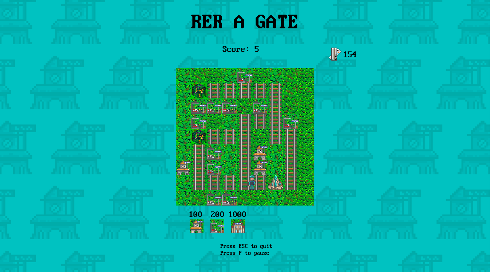
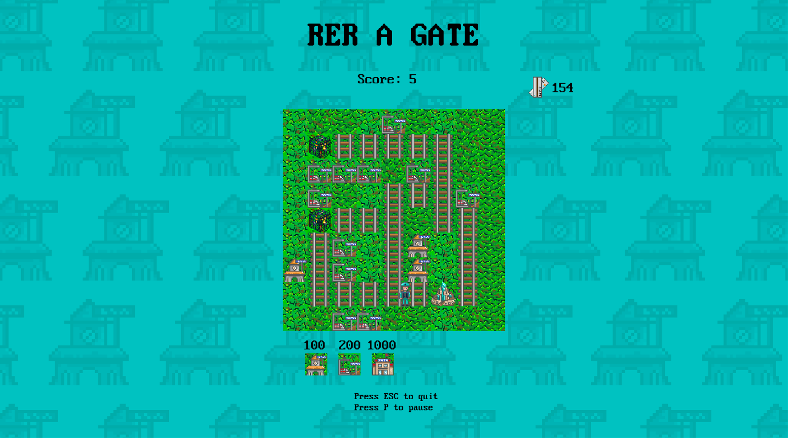
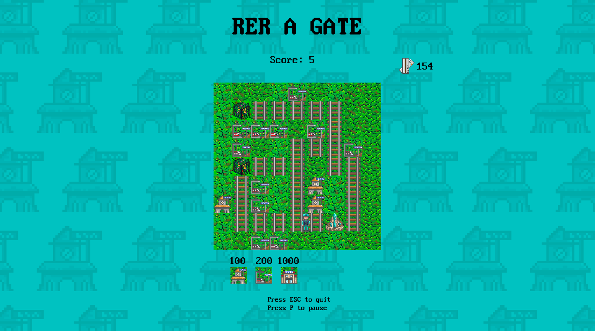

Build your own RER stations and defend them against mean ticket inspectors and sneaky grandmas!
Project type: Video game
Date: 2024
Context: Student project at IMAC
Technologies: C++, CMake
Description:
The RER A is a Parisian public transport network that we all love—obviously—and which is famous for its punctuality and reliability (again, obviously). To celebrate it, we decided to create a Tower Defense in its honor. Build your own stations and defend them against nasty ticket inspectors and sneaky grandmas looking to report you! Don't let them take over our beloved line!
Tower Defense is a single-player game set on a defined map, with one or more paths leading to a base that the player must protect to avoid losing the game. Waves of enemies appear at regular intervals at the entrance and head towards the base at varying speeds with the goal of destroying it.
To protect the base, the player must use their available money ($1,000 at the start of the game) to purchase towers and place them on the map. These towers—whose type determines power, fire rate, and cost—automatically shoot at enemies within range. By defeating enemies, the player earns money to buy more towers. The waves become increasingly difficult (higher health and speed), and the player's goal is to keep the base alive for as long as possible. The final score is determined by the number of waves survived.
